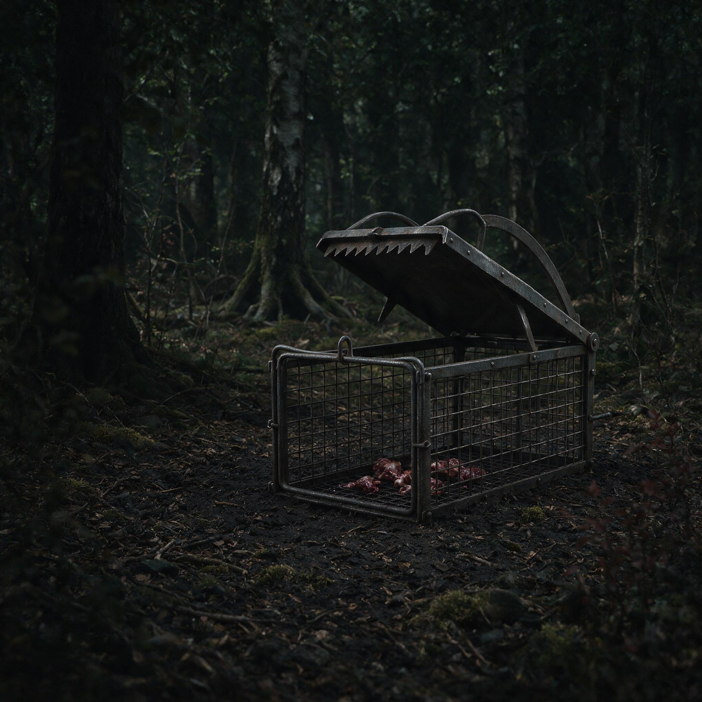

第 13 章
陷阱里的手艺
罗伊·桑切斯将账簿合拢，锁入抽屉。这一动作虽为账目画上句点，却未能终结问题本身。当围栏中的野猪被标定价格，便意味着交易成为可能；而交易一旦成立，便为它们的存续提供了现实依据。这一逻辑链条并未因抽屉的锁闭而断裂，它沿着公路、电子汇款单与冷藏车厢的轨迹不断延伸，最终抵达那些以陷阱和钢缆为生的人们手中。
桑切斯锁抽屉的那一年，在阿肯色州奥扎克山区，一个陷阱师正要出门巡视他布下的三十七个套索。他住在拖车里，拖车停在一块私人租地的边缘，往外是奥扎克国家森林的次生林。他叫的名字在当地县政府的猎手登记表上有，在州农业部门的伤害赔偿投诉记录里有，在加工商收购单上出现过四十多年。

野外设置的钢制捕猪陷阱
AI 生成插图，非史实影像。
现在他扶着拖车门的门框，趁天还没亮透，把一根新钢缆卷进背包。霜已经很厚了，厚到拖车铝皮上的铆钉泛出一层灰白。他呼出的气在门灯外散开，像一小团被冻住的棉絮。
七十三岁。两只手上没有一块完整的皮肤。指关节鼓得很高，像被塞进过碎石子。
右手食指的第二个指节彻底直不了——那是1987年一头二百二十磅公猪在套索里翻滚时，钢缆滑脱的瞬间把手指绞进了扣环。他是个在奥扎克山区布套索的人，干了四十一年。
这地方的野猪问题从他记事起就有，但他从来不会这样叫它。“问题”是住在县城里的人说的，是坐在罗利或小石城办公室里的人说的。对他来说，野猪是猪，是每天要查看的三十七个点，是下雨前会往低处走的蹄印，是霜冻时更喜欢在松针厚的地方打滚的体重。至于别的，他说不上来。
猪不是本地货。这个事实他是在县图书馆里一张科罗纳多远征路线图上看到的。那张图印在一本旧书里，图上有箭头穿过大平原，箭头旁边标着年份：1540到1542。西班牙征服者弗朗西斯科·巴斯克斯·德·科罗纳多带着远征队来了，那是欧洲人第一次在大平原上留下关于这片土地的记录，而猪也同时进了记录。那些猪里有一部分跑了，成了野猪。书上的说法是“逃逸或遗弃”。在奥扎克，人们不这么说。老人说，这些猪“走了”。
走掉之后，它们教会了自己过日子，在橡树下拱橡实，在溪沟里泡泥浆，在没人管的林子里传了一代又一代。阿肯色州的人猪关系比西班牙远，但又比大多数人以为的近得多。
眼下他走到第一个陷阱位置。路是土路，冻得很硬。脚踩上去发出细碎的脆响，像轧过一层薄冰。霜从山沟底部升上来，贴着地面流动。他不用看套索就知道它在哪——那根八分之三英寸钢缆的一头固定在橡树根部，另一头是个活套，悬在两道窄路交汇的缺口处。他的身体记得这个位置，就像舌头记得自己的后槽牙。
套索没动。他蹲下来，不是看钢缆，是看地面。霜让地面的很多痕迹变得模糊，但对他来说，模糊也还留着足够的信息。新蹄印压过的霜比周围的霜更透明一点，因为脚底的热量融化了一部分，又很快重新结晶。他看一道印子的边缘和深度，脑子里自动转成体重和步态。昨晚过来的是三头猪，一头大的带着两头小的。方向从山上下来，过水沟，走左岸的灌木线。走在后面的那头小猪左后蹄有点拖地。霜太厚，看不到别处，但这就够了。这就是他的判断方式。
先看天，再看地，再看猪留下的最细微的改动。气压在他的左膝盖里报数。昨晚气压降了，他的膝盖从傍晚就开始闷闷地胀，像有人在关节里塞进一块吸了水的海绵。他知道这意味着猪群会从山脊往下移，找低处躲风。
他也知道眼下没有猪进套。原因不是位置错了，是时候还没到。雨要来了，猪群会在雨前的一个窗口下来。他现在要做的，是先把所有套索都走一遍，把昨天夜里发生的事记下来。
第二处套索布在一片被拱翻的橡树根旁边。树根区像是被机器切过一遍，腐叶和黑土翻出来，几根细根咬断了。压板式的机关埋在两英寸下。
他一看地面就明白：不是猪触发的。石头上压着松开的缆索，压板露了出来。几组小爪印绕着压板转，是浣熊。浣熊把压板当成了可以翻的石头。
他蹲下，把触发板重新埋好，一边埋一边调整弹簧。他的办法是用两只手互相较劲：左手压在板子上，慢慢加力，右手搭在弹簧上，用指腹感受某个特定的回弹。那个回弹的位置就是他要的。大约在六十到八十磅。不到六十的动物过不去，超过八十的才能压下去。
这个数字他从来不量，但他的手认识。有人问过他为什么不换成笼式诱捕器。他知道那种东西。县里的推广员说过好几次，说德州那边用得多，一个笼子能抓一整群，效率高得多。他没有反驳，只是说，笼子搬不进这片山。他的意思不单是笼子太大太重，而是笼子天生有一种直来直去的脾气：它需要一个平坦的、车子能开到的地方。可是奥扎克这里的猪路是斜的，是贴着裸岩边缘往下斜的。你没法把一只八百磅的铁笼放在四十度的斜坡上，更没法让一裙猪在雨夜中排着队走进去。
他的套索轻，但又不能单说轻。轻不是优点，轻是前提。前提是他必须精确地知道猪会踩在哪儿。
继续向前走到第五处。这个点的目标是一头公猪。他看过那头猪两次，都在黄昏将黑未黑的时候。体型不小，估算二百五十磅以上。左耳撕裂。这头猪三个星期前开始在这片松林边上出现。它从不让自己的蹄子落在主兽径上。老人为它专门找了一条侧线——贴着松林边缘，始终在灌木遮蔽之下。发现这条侧线花了四天。
头三天他看到的主径蹄印更新了，但总是没有大的在前头。第四天，他蹲在一丛矮松后头，往主径外偏移了大约三十米，才看到一串单独的大蹄印。方向与主径平行，压在半腐的松针上，前面窄，后面深，后脚跟外侧有一块比内侧塌下去多一毫米。他从这串蹄印就知道这头猪的右前腿有旧伤。
他在侧线上布了个套索，用了延迟释放的机关。那是个他自己做的小装置：旧卡车板簧片改的，一个从报废棘轮扣上拆下来的零件，加一根绊线。绊线横在离地十厘米处，猪碰了之后，机关不马上收紧，而是等大约零点三秒。这个延迟的零点三秒，是他用二十年前的一次失败换来的。那天上一头大公猪触发套索后，在缆索收紧前的一瞬间蹿了出去，留下一根弯了的钢缆。他当时蹲在那个点上，反反复复地想那个过程：前脚碰到绊线，重心还没有完全过；套索开始收，猪开始发力；
但收紧的力还没到腿上，它已经在加速度上赢了。他用了差不多一冬天，把触发的时机从接触绊线那一下挪后，挪到猪的后腿即将落地的那个瞬间。这会儿他蹲在松林边上看。
绊线没动。侧线上没有新蹄印。他往外走了五米，看到蹄印从侧线外侧绕了过去。那头猪昨晚来过，但没靠近。
他站着，没有重新安置陷阱，没有更换位置，也没有自言自语。他知道这头猪察觉到了什么。可能是气味，可能是某个更细微的不协调。野猪的鼻子能闻出松针下面残留的油脂味，能闻出钢缆被氧化后发出的一点类似铁锈的冷腥。它把这气味和某种危险连在了一起。一旦连上，就不会再走这条线。
他现在能做的，是放弃这个点，去找它的新路线。那需要再来四天，或者一个星期。在这种天气里，一个星期本身就是代价。但他不赶时间。
他和联邦的人不一样。联邦野生动物服务局的方案讲效率。那些方案的书页他看过，印在厚纸上的图表，每组柱子长短不一，旁边标着“每陷阱夜捕获率”“每头移除综合成本”。在德州那些平坦的地方，网格化部署听起来很管用。五百米一个网格，诱捕器按算法放，摄像头盯着，数据传回电脑。一个技术员可以管几十个点，不用记地形，不用看霜。所有的判断都在屏幕上。
纸面上每陷阱夜捕获率，是像他这样的人一天下来想都不敢想的。然而放到奥扎克，这纸上的效率像雪落在石头上，留不住。五百米在平地上是一脚油门的直线，在这里是一道山脊加一条溪谷。山脊这边下了雨，山脊那边干的。溪谷底部的植被密到狗都钻不过去。网格里的两个诱捕器可能在直线距离上只差五百米，但猪根本不会从中间走。猪从北坡下谷底，沿着水道的弧线转，然后折向东边那片野李树林。这一切在算法地图上是一团密密的等高线，什么也说不出来。
可是对他来说，等高线是活的：哪条线夏天有水，哪条线冬天有冰，哪条线下一场雨之后会变成烂泥滩。他不用卫星，不用项圈，不用相机，也不算什么捕获率。他只看一样东西：今天猪在哪儿，明天它们会走到哪儿去碰他的套索。
他走到第七处套索。这个点在山脊线上，两块沙岩露头中间夹着一个窄口。这是整片租地上最稳的一个点。猪要翻山脊，最省力的过法就是从这窄口挤过去。风从北坡吹上来，冷而且干。他还没走到跟前，就听见了粗重的呼吸声。套住了。
一头上百来斤的母猪躺在窄口外的碎石地上，两条前腿伸着，右后腿被钢缆咬住。它没死，侧肋上下起伏，鼻孔里呼出的白气像小炮一样冲出来。见他来了，它昂起头，四条腿同时蹬地，身体斜着转过来。钢缆绷得很紧。他往前走，它又蹬了一轮，冲着空气猛咬一口。
他没有说话，从腰后抽出一把旧左轮。枪口对准前额正中。枪声在山脊上炸响，很快被松林吞下去。猪的后腿挺了一下，终于不动了。
他解开套索，查看钢缆。缆股上沾着血和泥。他把它在湿草上擦了两遍，又用手捋了一遍。还能用。
他把猪拖到窄口外的平地上，和另一头猪并排放着。今天已经有两头了。按照经验，一个普通日子捕到四头就是不错的数字。他还要接着走，因为还有十多个点没看。没看过的点谁也不知道会有什么。
走到十七号点时，他看见了本不该出现的东西。一段钢缆断了，断口朝外张开，钢丝像刺一样一根根竖着。固定端的扣环好好的。套索那一头的钢缆被拉开，断成两截。地上的蹄印很深，每一脚都像跺进去的。
旁边有血，已经半干，滴在霜上，形成几个黑红的圆斑。血沿着一条窄径往东南方向洒去，越来越稀。他蹲下，用手指碰了一下最深的那处蹄印。冰碴子扎手。印比他的拳头还长。这是一头大公猪。
他顺着血迹和蹄印往东南追。血滴从密到疏，过了大约三十米，就看不见了。蹄印继续往前，进入一条干燥的碎石冲沟。再往前，就是国家森林的边界。
那条边界从地面看过去什么也不是，没有墙，没有铁门，只有一棵地界标树和几根锈了的带刺铁丝。对野猪来说，这条线不存在。对他来说，这条线是硬的。他的套索只准设在私人租地。他没有联邦的许可，也没有追进森林的权限。他停在那里，看着蹄印消失在一片矮橡和山胡椒后面。血迹已经不那么浓了，猪还在走。
这时候，整座山林还没有完全亮透。霜开始退了，树根周围的草叶上开始滴第一道水珠。但他知道风要来了，可能午后就有雨。蹄印和血迹会被雨水冲掉。这头猪会消失得无影无踪。
这头猪他没见到。没见过它从套索里往外挣的样子。但他见过足够多这样的断缆。
钢缆不是被磨断的，是被一次暴冲硬拉断的。断口齐整里带着绞扭的痕迹，说明猪被套住之后，先用蛮力把钢缆绞成一股，再向相反方向拧，拧到某一段金属疲劳到了极限。那种挣扎过程可能只持续几秒，也可能几分钟。地面上的蹄印像铁钉打进去的一样，血从套索和皮肤之间被挤出来，溅出一片扇形。
这头猪受的伤不轻。套索的断口钢丝在皮下滑动，能切开口径不规则的伤口，甚至割断肌腱。它带伤逃走。现在是它最危险的时候。
一头受伤的公猪会做出什么事，他再清楚不过。正常的野猪闻到人的气味会退。受伤的不一样。疼痛把它脑子里的预警压下去了。它会躺在某个灌木丛里，听见人走近时不退，反而冲出来。它的下獠牙对着腿骨的高度，一下能豁开一条长口子。
他记得奥扎克国家森林里那条徒步小径上的事。好几年前了，一个徒步的人被受伤的公猪从路边冲出来撞倒。后来县里的报纸上登了标题。那头猪最后是被野生动物服务局的人找到、打死的。但在他这个点，这头猪会先遇到谁，谁也不知道。他站在边界线上，没有越过去。
不是不想，是越过去也没有用。你追进林子里，一脚踏进不熟悉的沟，不熟的水，你不但追不上它，反而可能把自己送进它嘴里。
这头猪回到林子里之后，会变得更警觉。伤口会教育它。它会避开这条冲沟，避开这个陷阱点，很可能也会避开整个南坡。它记得这里有一个会困住它的金属环，记得自己在环里挣扎的时候是怎么靠着一股蛮劲拉断缆的。它会躲得比原来更深，走更乱的路线，挑更想不到的时间下山。它的后代也会带着某种模糊的警觉长大。
这不是童话，不是什么“老猎人和狡猾猎物”。这是现实中发生的动物行为变化：一头从套索里逃出来的公猪，比普通猪更难再被抓到。
他回到断缆处。把断缆从固定端解下来，卷好，放进背包。他有两根备用。现在不是重新布设这个点的时候。猪已经认得这个点了。再布同样的套索，只会让它更肯定这里危险。他要让这个点空着，至少一个星期。不是放弃，是让危险的气味慢慢凉下去。
这个决定他不会和任何人讨论。县推广员会问，为什么不补设？为什么不按原来的网格密度继续？
联邦的报告里有一套“重布设时机”的建议，大致意思是陷阱在触发或失败之后，应当根据周边区域猪群活动频率，在二十四到七十二小时内重新布设，以保持覆盖率。他没有读过那一段，但有人亲口跟他转述过。听完之后，他问了一句：这里的每一条山沟都一样吗？
问得地方官没有回话。现在他身后还剩下几个点没走。他继续。他走过一条干涸的溪沟，跨过几根横倒的松树，在湿地上看到满满一片野猪拱过的泥浆坑。那些坑一个接一个，像用铲子和锄头胡乱掘出来的。猪在找虫子、块茎、掉落的橡实。
地面上有新旧不一的蹄印，压覆得像放牛场。这里是它们聚会的地方。他不由得多看了一会儿，不是看猪有多少，是看它们来的路径。有从北坡下来的线，有沿溪边从西边绕过来的线，还有一股是从东边那排野李子树下钻出来的。这几条线他都能在脑子里连起来。他知道它们什么时候来，来干什么。他知道在哪条线上放一个套索，会比在泥坑旁放十个更有效。他又走了几处。有的套索没动，有的被雨水冲歪了，有的被鹿触发了。
他把能重新布的都重新布了。手上的动作快而不乱。风刮起来，带着雨意。雨没下之前，他全部走完了三十七个点。回到拖车时，天已经灰下来。他把那几头死猪装到拖车后的小货箱里，准备午后送去县里的野猪加工商那儿。他先去吃了几口罐头。铝锅旁边放着一张折起来的纸，纸页已经软了，边角起了毛。
那是县农业办公室发给他的“野生动物损害管理服务须知”。里面有电话，有投诉表，有联邦野生动物服务局的介绍。他扫过其中一小段，那里写着建议采用“标准化网格诱捕方案”，在目标区域统一布设诱捕设备，配合运动感应摄像头和全球定位数据。
他看完，把纸原样折好，塞回桌角。没有说什么。但他知道那段话写的是什么。是想要把猎捕这件事变成一套可审计的工序。每个点有编号，每台设备有记录，每头捕到的猪都在表格里有位置。这没有错。审计需要这样。联邦的钱拨下来，就必须用这种方式证明效果。他自己也懂。
县政府的人曾经说过，现在申请项目资金，光说“我熟悉这片山”是没有用的，要有数据，要有照片，要有坐标。他可以去学用相机，也可以学用定位仪。可这些东西买来了，学来了，也不能替他判断哪根断枝是被猪蹭过的，哪片泥浆是昨天新滚的。他的身体里没有开关，不能把四十一年变成表格。他的儿子开了十年叉车。
时薪从十块多涨到十八块五。儿子有医疗卡，有退休金，有工会。儿子小的时候跟他巡过几次套索。一次在雪地里，套住了一头小猪。小猪叫得厉害，像小孩哭。儿子那时候八岁，蹲在那儿哭。他当时对儿子说，你要是不想看，就到后头去站着。儿子没走，看完了全过程。
但现在儿子不会来了。上一次来，是帮他运两头猪去加工商那里。儿子在路上算给他听：你早上四点起来，到现在算了多少小时？你卖了这两头猪能拿多少钱？扣除油钱和铁钱，剩多少？除一下，一小时多少？老人没说话。他知道数字是多少。每一年他都知道。
但他不知道的是，如果他不干，这整片山坡上的猪从哪条路下来，哪条路危险，哪条路能抓到，就没有人知道了。也许有人会说，猪会越来越多，总有人会来干。可来的人凭什么干？
按小时算，不划算。按危险算，不划算。按收益算，不划算。你抓了一头猪，卖了，钱到了口袋里，可是那头猪的肉最终流向哪里，你不一定弄得清。在这个由野猪构成的利益链条上，个人的手艺只是一个极其微小的前端。大多数人在这个链条里挣到钱的，不靠力气，靠的是门票、加工、设备、运输、政策拨款。用钢缆和双脚去抓猪的人，在链条末端，几乎拿不到什么。
罗伊·桑切斯在锁上抽屉的那天想到了这件事：只要猪还能被标价卖出去，就会有人希望它们继续存在。他想到的“有人”，包括桑切斯所在的州那些经营狩猎牧场的人，包括把野味肉卖到城市里的商人，包括做热成像仪和夜间瞄准镜的公司，也包括那些为联邦项目提供标准化诱捕设备的供应商。他们不会希望猪消失。他们希望猪持续地、可控地存在。
而在这个持续存在的生意里，一个七十三岁的陷阱师能拿到的，可能还没有一个二道贩子转一下手来得多。这就是知识无法传承的原因之一。不是因为老人不愿教，也不是因为儿子不想学。单门手艺不足以撑起一个家。过去，捕到的猪可以拿去卖，日子能过得下去。
现在，猪更多了，价格却撑不起一个劳力。每一磅野猪肉，在加工商那儿，经过整车批发，转进香肠厂、宠物饲料厂或野味零售店，最后形成的利润里，几乎没有回流的。制度没有为“熟知山林的人”留下一个稳定的位置。你要继续干，就得忍受时薪低到三块四块的日子，就得自己承担受伤、疾病和乏人问津的风险。
儿子只是把所有这些东西，压缩成了一句：这活不划算。他这一天剩下的时间，是把猪送走。加工商的小冷库在县城边上，门口有磅秤。他开车到那儿时，天已下雨。雨点打在沥青地上，溅起水花。他签了单子，按磅算钱。今天几头猪的价钱，他扫一眼心里就有数。和往年差不多，这些年野猪的收购价没有多少大变。油钱一直在涨，钢缆和缆扣也涨了。
算下来，今天是白干加一点零头。他把钱揣进衣服内袋，没有数。回到租地时，雨已经下起来了。他站在拖车门口，望着南边国家森林的方向。雨会把断缆处的血腥冲掉，把蹄印抹平。他更找不到那头公猪了。明天他还会照着三十七个点走一遍。
也许那头猪今晚会出来，也许不会。也许它死了，也许活着。他不知道，但他能感觉到某种空出来的位置正在沿着雨水渗进土里。一个会读这片山的人，现在只剩下他了。他如果不在了，这些套索就真的和树根、石头、雨水没有区别。野猪还是照样走，照样拱，照样在夜里穿过那些没有人的沟谷。
它们不会等他。它们从来不等。他刚才站在冷库门口时，想到一件事。那些被卖掉的猪会变成肉、香肠、狗粮，或者别的什么东西。它们从这片林子里被抓出来，最后进了人的账本和冷藏库。也许他操心的不是那些猪，而是那个账本和冷藏库究竟替谁记了账。